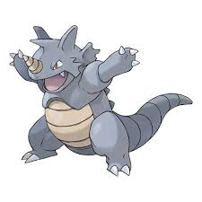

 Rhydon the Evolution of rhyhorn and a rock/ground pokemon. This pokemon can be encountered later in your journey in the Original games. Now you may be wondering why this pokemon of them all is on the list. The reason why is when the first games were being programmed the Very First Pokemon that was coded into the Game was Rhydon. Meaning that he was the first Pokemon Created by the programmers or the First Real Pokemon, since the others are just ideas until they get programmed into the game. Since he was the first Pokemon Created he is in the running for the first Pokemon.